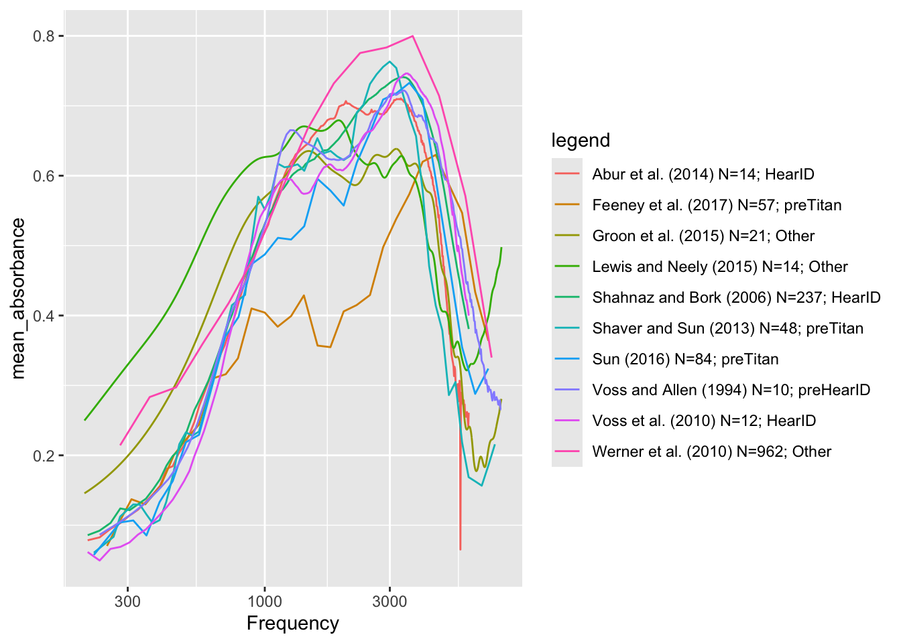
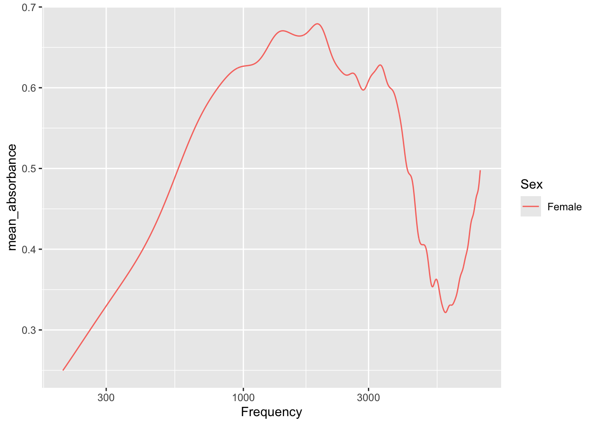

library(mdsr)
library(dbplyr)
library(DBI)
library(RMariaDB)
library(tidyverse)Project 4
Source of Data: Wideband Acoustic Immittance (WAI) Database hosted by Smith College (doi.org/10.35482/egr.001.2022)
Plan:
In this project, I plan to analyze and visualize data from the Wideband Acoustic Immittance (WAI) Database. To do so, I will consider the absorbance measurements across different frequencies for specific identifiers and groups. I will explore patterns in absorbance by using SQL queries, for instance, by grouping data by variables such as sex and frequency. Lastly, using ggplot, I intend to visualize the processed data in SQL to visually represent the explored relationships between variables.
con_wai <- dbConnect(
MariaDB(), host = "scidb.smith.edu",
user = "waiuser", password = "smith_waiDB",
dbname = "wai"
)
Measurements <- tbl(con_wai, "Measurements")
PI_Info <- tbl(con_wai, "PI_Info")
Subjects <- tbl(con_wai, "Subjects")
# collect(Measurements)SELECT Identifier, Frequency, LOG10(Frequency) AS log_frequency, AVG(Absorbance) AS mean_absorbance
FROM Measurements
WHERE Identifier IN ("Abur_2014", "Feeney_2017", "Groon_2015" ,"Lewis_2015", "Liu_2008"
"Rosowski_2012", "Shahnaz_2006", "Shaver_2013" , "Sun_2016", "Voss_1994", "Voss_2010", "Werner_2010" ) AND Frequency > 200 AND Frequency < 8000
GROUP BY Identifier, Frequency;graph |>
ggplot(aes (x = Frequency, y = mean_absorbance,
color = Identifier,
group = Identifier)) +
geom_line()+
scale_x_log10()
labs(
title = "Mean Absorbance Across Frequencies for Various Studies",
x = "Frequency (Log Scale)",
y = "Mean Absorbance"
)$x
[1] "Frequency (Log Scale)"
$y
[1] "Mean Absorbance"
$title
[1] "Mean Absorbance Across Frequencies for Various Studies"
attr(,"class")
[1] "labels"Description of Graph:
This plot titled “Mean Absorbance Across Frequencies for Various Studies” shows the mean absorbance values across a range of frequencies (plotted on a log scale) for various studies, as identified by the color-coded legend. The graph, where each line represents data from a specific study, depicts how absorbance varies with frequency within the range of 200 to 8000. Overall, the absorbance increases with frequency, reaching a peak between approximately 1000 and 3000 before declining.
SELECT p.Identifier, p.Year, p.AuthorsShortList,
COUNT(DISTINCT SubjectNumber, Ear) AS ear_u
FROM PI_Info AS p
LEFT JOIN Measurements AS m ON m.Identifier = p.Identifier
WHERE p.Identifier IN ("Abur_2014", "Feeney_2017", "Groon_2015" ,"Lewis_2015", "Liu_2008"
"Rosowski_2012", "Shahnaz_2006", "Shaver_2013" , "Sun_2016", "Voss_1994", "Voss_2010", "Werner_2010" ) AND Frequency > 200 AND Frequency < 8000
GROUP BY Identifier, Instrument;| Identifier | Year | AuthorsShortList | ear_u |
|---|---|---|---|
| Abur_2014 | 2014 | Abur et al. | 14 |
| Feeney_2017 | 2017 | Feeney et al. | 57 |
| Groon_2015 | 2015 | Groon et al. | 21 |
| Lewis_2015 | 2015 | Lewis and Neely | 14 |
| Shahnaz_2006 | 2006 | Shahnaz and Bork | 237 |
| Shaver_2013 | 2013 | Shaver and Sun | 48 |
| Sun_2016 | 2016 | Sun | 84 |
| Voss_1994 | 1994 | Voss and Allen | 10 |
| Voss_2010 | 2010 | Voss et al. | 12 |
| Werner_2010 | 2010 | Werner et al. | 962 |
SELECT p.Identifier, Year, AuthorsShortList,
COUNT(DISTINCT SubjectNumber, Ear) AS ear_u,
CONCAT(AuthorsShortList, " (" , year, ") ", "N=", COUNT(DISTINCT SubjectNumber, Ear), "; ", Instrument) AS legend
FROM PI_Info AS p
LEFT JOIN Measurements AS m ON m.Identifier = p.Identifier
WHERE p.Identifier IN ("Abur_2014", "Feeney_2017", "Groon_2015" ,"Lewis_2015", "Liu_2008"
"Rosowski_2012", "Shahnaz_2006", "Shaver_2013" , "Sun_2016", "Voss_1994", "Voss_2010", "Werner_2010" ) AND Frequency > 200 AND Frequency < 8000
GROUP BY Identifier, Instrument;| Identifier | Year | AuthorsShortList | ear_u | legend |
|---|---|---|---|---|
| Abur_2014 | 2014 | Abur et al. | 14 | Abur et al. (2014) N=14; HearID |
| Feeney_2017 | 2017 | Feeney et al. | 57 | Feeney et al. (2017) N=57; preTitan |
| Groon_2015 | 2015 | Groon et al. | 21 | Groon et al. (2015) N=21; Other |
| Lewis_2015 | 2015 | Lewis and Neely | 14 | Lewis and Neely (2015) N=14; Other |
| Shahnaz_2006 | 2006 | Shahnaz and Bork | 237 | Shahnaz and Bork (2006) N=237; HearID |
| Shaver_2013 | 2013 | Shaver and Sun | 48 | Shaver and Sun (2013) N=48; preTitan |
| Sun_2016 | 2016 | Sun | 84 | Sun (2016) N=84; preTitan |
| Voss_1994 | 1994 | Voss and Allen | 10 | Voss and Allen (1994) N=10; preHearID |
| Voss_2010 | 2010 | Voss et al. | 12 | Voss et al. (2010) N=12; HearID |
| Werner_2010 | 2010 | Werner et al. | 962 | Werner et al. (2010) N=962; Other |
SELECT p.Identifier, p.Year, p.AuthorsShortList, Frequency,
LOG10(Frequency) AS log_frequency, AVG(Absorbance) AS mean_absorbance,
COUNT(DISTINCT SubjectNumber, Ear) AS ear_u,
CONCAT(AuthorsShortList, " (" , year, ") ", "N=", COUNT(DISTINCT SubjectNumber, Ear), "; ", Instrument) AS legend
FROM PI_Info AS p
LEFT JOIN Measurements AS m ON m.Identifier = p.Identifier
WHERE p.Identifier IN ("Abur_2014", "Feeney_2017", "Groon_2015" ,"Lewis_2015", "Liu_2008"
"Rosowski_2012", "Shahnaz_2006", "Shaver_2013" , "Sun_2016", "Voss_1994", "Voss_2010", "Werner_2010" ) AND Frequency > 200 AND Frequency < 8000
GROUP BY Identifier, Instrument, Frequency;graph2 |>
ggplot(aes (x = Frequency, y = mean_absorbance,
color = legend,
group = legend)) +
geom_line()+
scale_x_log10()
SELECT *
FROM Subjects| Identifier | SubjectNumber | SessionTotal | AgeFirstMeasurement | AgeCategoryFirstMeasurement | Sex | Race | Ethnicity | LeftEarStatusFirstMeasurement | RightEarStatusFirstMeasurement | SubjectNotes |
|---|---|---|---|---|---|---|---|---|---|---|
| Abur_2014 | 1 | 7 | 20.0000000 | Adult | Female | Unknown | Unknown | Normal | Normal | |
| Abur_2014 | 3 | 8 | 19.0000000 | Adult | Female | Unknown | Unknown | Normal | Normal | Session 5 not included do to acoustic leak |
| Abur_2014 | 4 | 7 | 21.0000000 | Adult | Female | Unknown | Unknown | Normal | Normal | |
| Abur_2014 | 6 | 8 | 21.0000000 | Adult | Female | Unknown | Unknown | Normal | Normal | |
| Abur_2014 | 7 | 5 | 20.0000000 | Adult | Female | Unknown | Unknown | Normal | Normal | |
| Abur_2014 | 8 | 5 | 19.0000000 | Adult | Female | Unknown | Unknown | Normal | Normal | |
| Abur_2014 | 10 | 5 | 19.0000000 | Adult | Female | Unknown | Unknown | Normal | Normal | Session 4 not included do to acoustic leak |
| Aithal_2013 | 1 | 1 | NA | Infant | Male | Unknown | Unknown | Normal | Unknown | NA |
| Aithal_2013 | 2 | 1 | 0.0074418 | Infant | Female | Unknown | Unknown | Normal | Unknown | NA |
| Aithal_2013 | 3 | 1 | NA | Infant | Male | Unknown | Unknown | Unknown | Normal | NA |
SELECT Sex, Frequency,
AVG(Absorbance) AS mean_absorbance, m.Identifier
FROM Subjects AS s
RIGHT JOIN Measurements AS m ON m.Identifier = s.Identifier
WHERE m.Identifier = "Lewis_2015" AND Frequency > 200 AND Frequency < 8000
GROUP BY m.Identifier, Frequency, Sex;head(graphforQ2) Sex Frequency mean_absorbance Identifier
1 Female 205.078 0.2497826 Lewis_2015
2 Male 205.078 0.2497826 Lewis_2015
3 Female 210.938 0.2555734 Lewis_2015
4 Male 210.938 0.2555734 Lewis_2015
5 Female 216.797 0.2612649 Lewis_2015
6 Male 216.797 0.2612649 Lewis_2015graphforQ2 |>
filter(Sex == "Female") |>
ggplot(aes (x = Frequency, y = mean_absorbance,
color = Sex,
group = Sex)) +
geom_line() +
scale_x_log10()
labs(
title = "Mean Absorbance Across Frequencies for Females",
x = "Frequency (Log Scale)",
y = "Mean Absorbance"
)$x
[1] "Frequency (Log Scale)"
$y
[1] "Mean Absorbance"
$title
[1] "Mean Absorbance Across Frequencies for Females"
attr(,"class")
[1] "labels"Description of Plot:
This plot displays the mean absorbance across a range of frequencies (plotted on a log scale) for female participants. The red line represents how the absorbance changes as frequency increases, starting from around 300 and extending up to approximately 8000. Absorbance increases steadily at lower frequencies, reaching a peak between 1000 and 3000 before declining at higher frequencies.
Description of Code:
In the code above, I, initially, connected to the WAI database and used SQL queries to extract absorbance data grouped by identifiers, sex, and frequency, applying necessary filters for frequency range and study identifiers. Then, piping in the processed data into R, I visualized it via ggplot. For example, I plotted mean absorbance by frequency on a log scale, distinguishing data by attributes like sex or study identifiers.